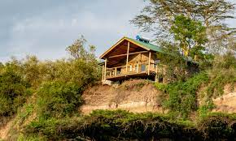
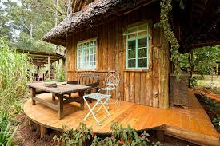
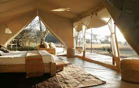

Tulia takes pride in providing rustic accomodation in a tranquil setting. Settle in any one of our rustic cottages:
This is a charming little cottage that's perfect for honeymooners and couples looking to re-kindle their love
This is an expansive cottage that accomodates families and large groups looking for a home away from home.
For outdoor lovers looking for an enjoyable camping experience, Bisil Tented Area is the perfect option. It combines the comforts of modern living with the ruggedeness of the wild outdoors.
